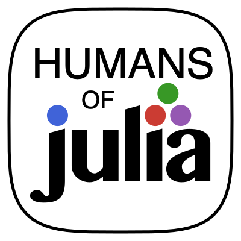

Menu
×

Humans of Julia
Home
Weekly constest
Projects
ailuJfOnamuH
moc.liamg@
This site was generated using
StaticWebPages.jl
GitHub
GraknClient.jl
Python
mkschulze, jean-françois baffier (azzaare), tk3369, humans-of-julia
A client interface to read from and write to the Grakn Knowledge Graph
Size: 621 KB
WeeklyContest
HTML
tk3369, laurens777, arubhardwaj, humans-of-julia
Weekly contest submissions
Size: 4482 KB
HoJ-logo-graphics
Julia
jakewilliami, humans-of-julia
A place to store potential logos for the Humans of Julia Discord server.
Size: 32 KB